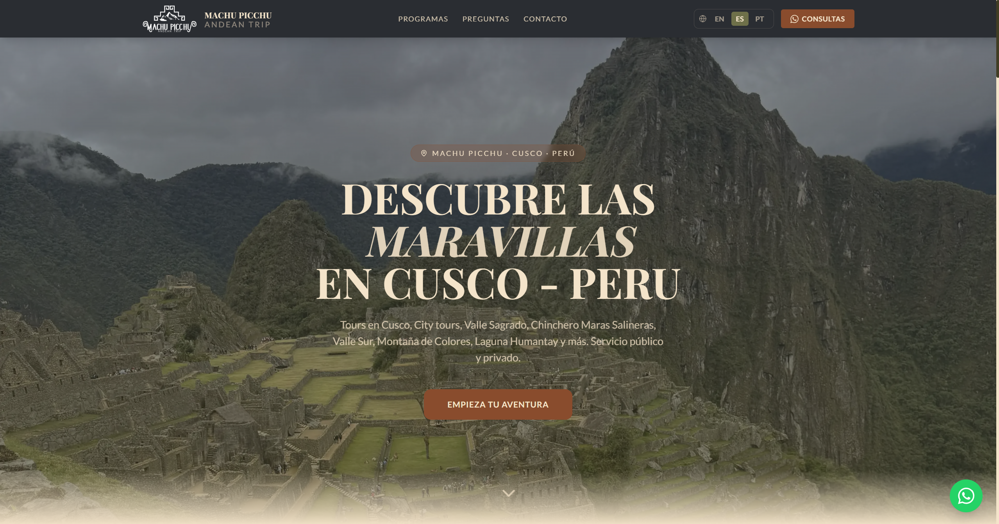

Descripción del Proyecto
Sistema web integral para agencia de turismo compuesto por un panel administrativo (CMS) para el control de tours/reservas y un portal público optimizado para la visualización de catálogo y precios.
Detalles Clave e Implementación
- Implementación de intercambio de datos mediante peticiones HTTP y consumo de REST APIs en formato JSON entre frontend y backend.
- Diseño y optimización de base de datos relacional en MySQL mediante consultas SQL estructuradas.
- Integración de flujos de contacto directo hacia API de WhatsApp y servicios de correo.
- Despliegue a producción con configuración técnica de servidores, DNS y administración de dominio en Hostinger.